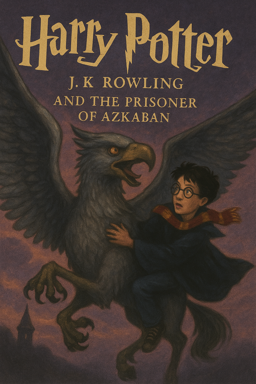

Harry Potter and the Prisonor of Azkaban
Back to Hogwarts  “Harry doubled up with pain, unable to breathe. A thick white fog was swirling around him inside his head. He couldn’t see, he couldn’t think. The cold was so intense, he felt it was piercing his insides. Then he heard it again... someone was screaming, screaming inside his head... a woman.. ‘Not Harry, not Harry, please not Harry!’ ‘Stand aside, you silly girl... stand aside, now...’ ‘Not Harry, please no, take me, kill me instead —’ Numbing, swirling white mist was filling Harry’s brain... What was he doing? Why was he flying? He needed to help her... She was going to die... She was going to be murdered... He was falling, falling through the icy mist. The screaming grew louder, and then — it stopped. The cold retreated slightly. A hand was shaking his shoulder. “Harry, Harry, are you all right?” someone was saying. “Are you all right?” Harry opened his eyes. He was lying flat on the ground. The blinding sunlight was streaming through the train window. He felt as though the cold that had filled him moments before was draining away in the warmth of the sun. He shivered. Ron and Hermione were kneeling next to him. Ron was looking white and shaken. Hermione was hovering over Harry, looking terrified. “Are you okay?” Ron asked, his voice trembling. “I — don’t know what happened,” Harry said, sitting up slowly. He was shaking all over. “What was that thing?” Hermione gave a small, frightened squeak. Ron looked around quickly. The compartment was empty except for them and the feeble figure of Professor Lupin, who had gotten to his feet and was now looking toward the door with his wand raised. The creature — the Dementor — had vanished. “Are you sure you’re okay?” Hermione said again, anxiously. “I heard... I heard a woman screaming,” Harry said quietly. “A woman screaming inside my head...” Ron and Hermione looked at him with expressions of horror. Lupin came back into the compartment, pocketing his wand. “Here,” he said, handing Harry a large, slab-like piece of chocolate. “Eat this. You’ll feel better.” Harry took the chocolate but didn’t eat it. “What was that thing?” he asked Lupin. “A Dementor,” said Lupin, who was now looking alarmingly pale. “One of the Dementors of Azkaban.” And at the sound of that terrible word — Azkaban — the cold seemed to seep back into Harry’s bones.”Summary
Harry Potter returns to Hogwarts for his third year after another miserable summer at the Dursleys’. This time, he runs away after accidentally inflating his Aunt Marge in a fit of anger when she insults his parents. Fearing punishment from the Ministry of Magic, Harry is surprised when the Knight Bus arrives and takes him to the Leaky Cauldron, where Cornelius Fudge, the Minister for Magic, instead assures him that he won’t be expelled. But Harry soon learns that the notorio mass murderer Sirius Black has escaped from Azkaban, the wizarding prison, and seems to be hunting him. Back at Hogwarts, security is tightened. Dementors—the terrifying guards of Azkaban—are stationed around the school, and their chilling presence affects Harry deeply, causing him to faint and relive his parents' deaths. Professor Remus Lupin, the new Defense Against the Dark Arts teacher, becomes a mentor to Harry, teaching him the Patronus Charm to ward off Dementors. Meanwhile, the mystery of Sirius Black thickens. Hagrid introduces the class to Buckbeak, a proud Hippogriff, but an incident with Draco Malfoy leads to Buckbeak being sentenced to death. Tensions rise as Harry, Ron, and Hermione struggle to uncover the truth about Black. A series of clues leads them to discover that the real traitor is not Black, but Peter Pettigrew, who has been disguised for years as Ron’s pet rat, Scabbers. One fateful night, Harry and Hermione follow Sirius and Lupin into the Shrieking Shack, where the truth about the betrayal that led to Harry’s parents’ death is revealed. Sirius, it turns out, was framed by Pettigrew, who had served Voldemort. Lupin, who is revealed to be a werewolf, and Sirius plan to bring Pettigrew to justice, but circumstances—including Lupin’s transformation and the arrival of Dementors—prevent them. In a race against time, Harry and Hermione use a Time-Turner to go back in time. They rescue Buckbeak and save Sirius from the Dementors’ Kiss. Sirius escapes on Buckbeak’s back, leaving Harry both heartened that his parents’ friend is safe, but also sad that he must remain in hiding. The book closes with Harry looking forward to a future where he has a godfather who cares for him, while also coming to terms with the complexities of the adult world—where justice doesn’t always prevail, and appearances can be deceiving.
back to top